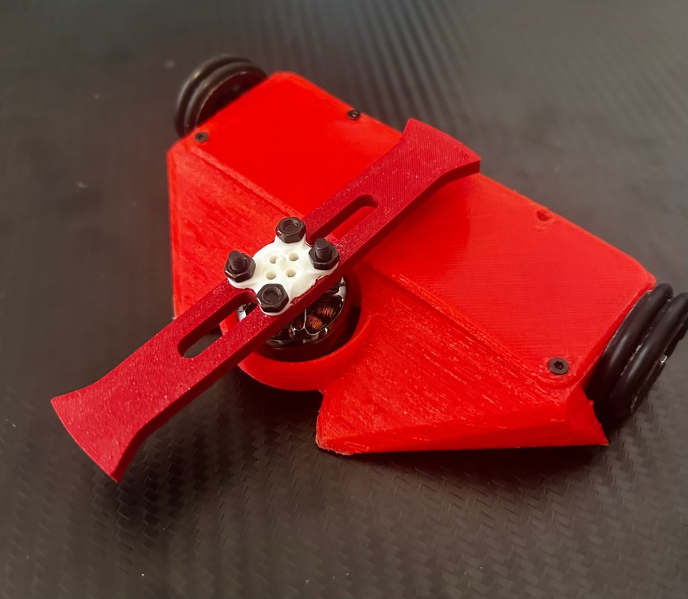

Robotics
Antweight combat robot (150 g)
Designed and built from scratch: parametric CAD chassis, 3D-printed and assembled by hand. Two N20 gearmotors for the drive and a brushless motor powering a horizontal spinner weapon, with dedicated speed controllers, radio control and a 2S LiPo battery.
Iterated through prototypes, failures and repairs to get it working within a 150 g weight limit.